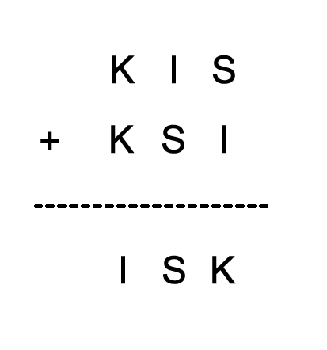

Problem ID 88261
Decipher the puzzle: KIS + KSI = ISK. The same letters correspond to the same numbers, different letters correspond to different numbers.
Hint
From the form of the first digits of all three numbers it follows that K $<$ I. Why?
Solution
For convenience of presentation, we write this puzzle as follows.

From the first column, it is clear that K < I. From this and from the last column it follows that S + I = K + 10 $($and not S + I = K$)$. Then from the second column we deduce 1 + I + S = S, or 1 + I + S = 10 + S. The first option is impossible, and from the second we immediately determine that I = 9. Hence K = 4, S = 5. The entire puzzle is decoded as follows: 495 + 459 = 954.
Answer
495 + 459 = 954.